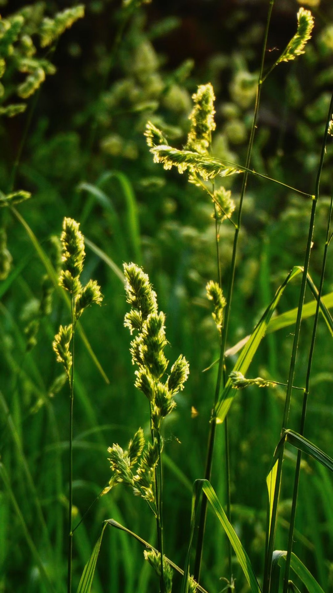

校园经历与获奖经历
课堂之外的实践、校园协作，以及竞赛与荣誉。

PHOTOGRAPHY · 校园四季6段
校园实践经历
12项
竞赛与作品奖
7项
学业与荣誉
CAMPUS
校园经历
2025.09 — 2026.09
新闻与传播学院
信息站站长
统筹学院信息站工作，负责校园信息采编、报送与团队管理，获评陕西师范大学优秀信息员。
2024.05 — 2026.03
陕西师范大学校融媒体中心
宣传部部长
协助组织学校音乐节、歌手大赛、运动会等大型活动宣传，运营学校官方公众号与社媒账号。
2024.09 — 2025.12
传薪融媒体工作室
摄影部部长
组织摄影比赛，统筹日常活动图文拍摄的人员协调与执行安排。
2024.04 — 2025.12
云享工作室
策划执行
负责网络媒介素养项目内容与路演宣讲的策划执行，参与公益课程选题拍摄，落地多项网络育人实体项目。
2023.10 — 2024.07
新闻与传播学院学工组
助理
协助老师完成学工组日常办公与事务协调。
2023.09 — 至今
班级
学习委员
负责班级日常学习与活动组织，统筹项目实践、汇报演出与外出拍摄。
COMPETITIONS
竞赛与作品
最佳剪辑奖中国丝路世界宣传拍摄比赛
省赛一等奖2025 全国大学生计算机大赛
省赛二等奖2025 全国大学生计算机大赛
校赛三等奖2025 全国大学生计算机大赛
优秀奖第十六届全国大学生广告艺术大赛
省赛二等奖2024 全国大学生计算机大赛
校赛二等奖2024 全国大学生计算机大赛
铜奖2024 新文科实践创新大赛
一等奖第十七届晨读经典大赛
二等奖第十六届晨读经典大赛
二等奖2023 “薪火杯”大赛
优秀奖校园摄影比赛
ACADEMIC & HONORS
学业与荣誉
二等奖学金2025 陕西师范大学校级奖学金
三等奖学金2024 陕西师范大学校级奖学金
优秀学生2025 陕西师范大学
优秀共青团员2025 陕西师范大学
优秀学生2024 陕西师范大学
优秀志愿者晨读经典大赛
优秀信息员陕西师范大学